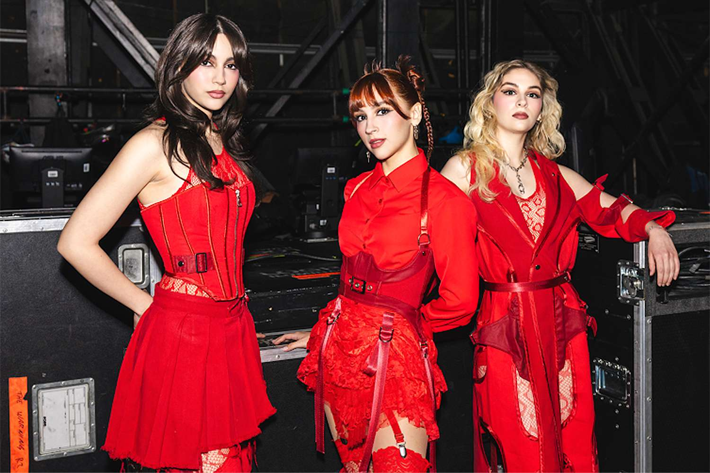

The Warning
The Warning é uma banda mexicana de hard rock e metal alternativo formada em 2013 pelas irmãs, Daniela (guitarra, vocal principal), Paulina (bateria, vocal, piano) e Alejandra Villarreal (baixo, piano, backing vocals), considerada um dos grandes destaques da atualidade no cenário do rock. Ficaram conhecidas pelo cover da música "Enter Sandman" da banda de heavy metal Metallica, em sua página do YouTube, ganhando atenção de artistas como Muse, Metallica e Foo Fighters.

Membros:
- Daniela "Dany" Villarreal - Guitarrista, vocalista principal.
- Paulina "Pau" Villarreal - Baterista, vocal secundário.
- Alejandra "Ale" Villarreal - Baixista, backing vocal.